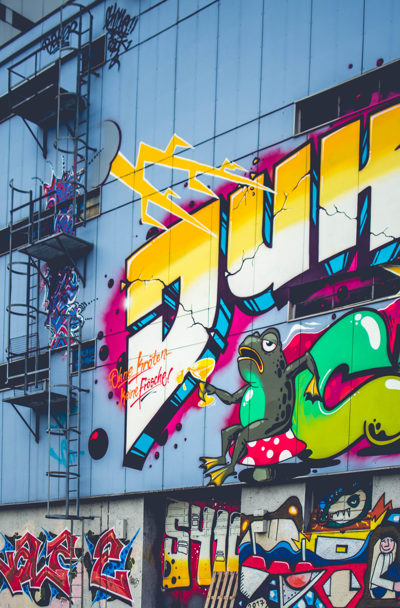
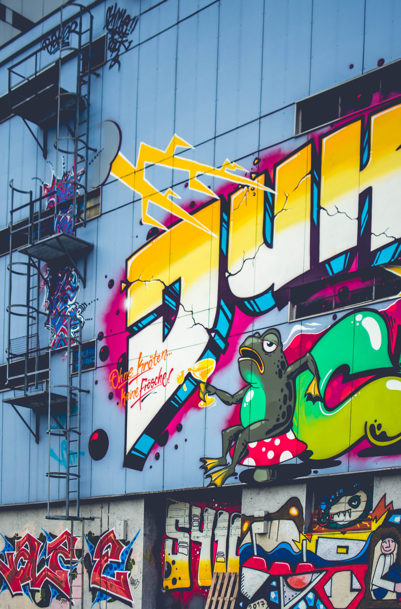
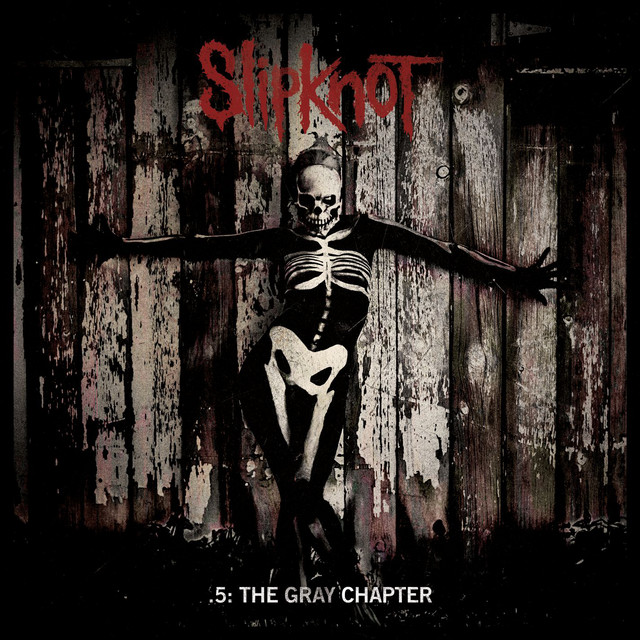

MINHA PLAYLIST
 

Como eu me vejo no futuro
Como eu me entendi como ser
para meu melhor momento

Quando eu conquistar tudo
3 MÚSICAS QUE PROVOCAM MEU FUTURO!!
JANTAR EM FAMILÍA!
churrasco e cerveja gelada
Bife em camadas com cebolas
Filé de Peixe com especiarias
MELHOR LEMBRANÇA

VIAJAR POR TODO O MUNDO

27 HORAS NO DIA

ACREDITAR NO QUE EU ACREDITO
EMOÇÕES